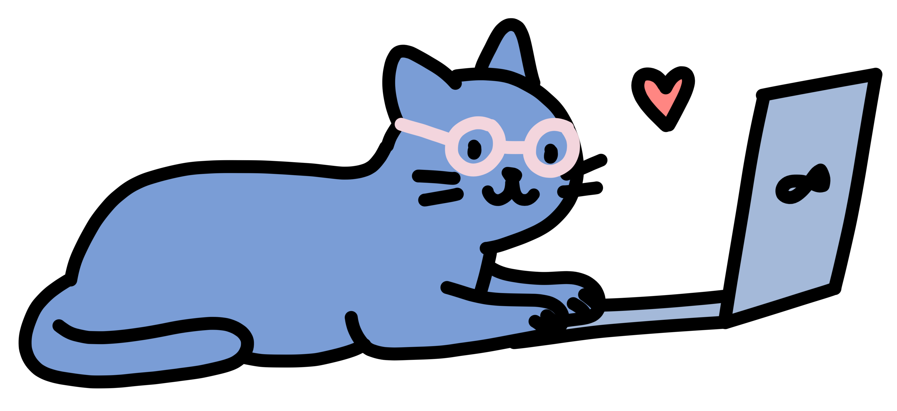

{% assign givebutter_campaign = site.givebutter_campaign_code | default: 'gMYxJ0' %}
{% assign givebutter_url = 'https://givebutter.com/' | append: givebutter_campaign %}
{% assign cats_assisted_total = nil %}
{% assign adoptions_total = nil %}
{% for metric in site.data.impact_stats.metrics %}
    {% if metric.key == 'cats_assisted' %}
        {% assign cats_assisted_total = metric.value %}
    {% endif %}
    {% if metric.key == 'adoptions' %}
        {% assign adoptions_total = metric.value %}
    {% endif %}
{% endfor %}

<section id="main" class="wrapper style1 donate-page">
    <div class="container">

        <div>
            <section>
                <section class="donate-hero">
                    <div class="donate-hero-copy">
                        <p class="donate-kicker">Every gift saves lives</p>
                        <h2>Fix one cat.<br/>Change a whole colony.</h2>
                        <p>Bay Area Cats is a volunteer-run, data-driven nonprofit dedicated to reducing cat overpopulation through prevention, rescue, and adoption. Your donation directly funds spay/neuter surgeries, veterinary care, and foster support for cats and kittens across Silicon Valley.</p>
                        <p class="donate-matching">Work at Google, Apple, or another company that matches gifts? Search for Bay Area Cats on <strong>Benevity</strong> and your donation can count twice.</p>
                        {% if cats_assisted_total %}
                        <div class="donate-hero-stat">
                            <span class="donate-hero-number">{{ cats_assisted_total }}</span>
                            <span class="donate-hero-label"><strong>total cats assisted</strong> and counting,<br/>thanks to donors like you</span>
                        </div>
                        {% endif %}
                    </div>
                    <div class="donate-hero-widget">
                        <givebutter-widget id="{{ site.givebutter_widget_id }}"></givebutter-widget>
                    </div>
                </section>

            <hr class="major" />
            <section class="donate-angel-tree" id="angel-tree">
                <div class="donate-angel-tree-photo">
                    
                </div>
                <div class="donate-angel-tree-copy">
                    <p class="donate-kicker">Holiday giving</p>
                    <h3>Wishlist Angel Tree</h3>
                    <p>This season our adoption center at Petco Sunnyvale has a little tree decorated with the cats waiting for homes. Every ornament is a real cat, and each one has a wish.</p>
                    <ol class="donate-angel-tree-steps">
                        <li><strong>Choose</strong> a cat from the tree, in store or online.</li>
                        <li><strong>Shop</strong> for their wish at Petco, or send it from our Chewy or Amazon wishlist.</li>
                        <li><strong>Donate</strong> it at our adoption center or ship directly to us.</li>
                    </ol>
                    <a class="petco-action-button donate-angel-tree-button" href="/angel-tree">Give a rescue cat a gift</a>
                </div>
            </section>
            <script>
            (function () {
              var btn = document.querySelector('.donate-angel-tree-button');
              if (!btn) return;
              btn.addEventListener('click', function () {
                if (typeof window.gtag === 'function') {
                  gtag('event', 'angel_tree_donate_page_click', { event_category: 'angel_tree', event_label: 'donate_page' });
                }
              });
            })();
            </script>

            <hr class="major" />
            <section class="donate-impact donate-proof">
                <div class="donate-impact-copy">
                    <p class="donate-kicker">Our impact</p>
                    <h3>Proof your dollars work</h3>
                    <p>We track every cat. Since 2022 we've helped thousands across Cupertino, Sunnyvale, and San Jose. And we publish the numbers.</p>
                </div>

                <div class="bac-stats bac-stats-donate">
                    <div class="bac-stat donate-adoptions-stat">
                        <div class="donate-hero-number" id="adopted">{{ adoptions_total | default: 1106 }}</div>
                        <div class="donate-hero-label">
                            <strong>total adoptions</strong>
                        </div>
                    </div>
                </div>
            </section>

            <hr class="major" />

                <iframe class="airtable-embed" src="https://airtable.com/embed/appklgrXgkT9hR2Ts/shr4RCpUUqQAJ2wlL" frameborder="0" onmousewheel="" width="100%" height="950" style="background: transparent; border: 1px solid #ccc;"></iframe><br/><br/>

                <hr class="major" />
                <section class="donate-options">
                    <p class="donate-kicker">Other ways to help</p>
                    <h3>Send supplies</h3>
                    <div class="donate-option-grid">
                        <article class="donate-option-card">
                            <h4>Give a Cat a Box</h4>
                            <p>Scratcher boxes and toys from <strong>Hide &amp; Scratch</strong>, priced for rescues.</p>
                            <a href="https://www.giveacatabox.com/partners/bay-area-cats" target="_blank" rel="noopener">Shop Hide &amp; Scratch <span aria-hidden="true">→</span></a>
                        </article>
                        <article class="donate-option-card">
                            <h4>Shop our wishlists</h4>
                            <p>Food, litter, and medical supplies, shipped straight to us.</p>
                            <div class="donate-option-links">
                                <a href="https://www.chewy.com/g/bay-area-cats_b103747788?utm_medium=email&utm_source=transactional&utm_campaign=SHELTER_BUSINESS_PAGE_APPROVED#wish-list" target="_blank" rel="noopener">Chewy <span aria-hidden="true">→</span></a>
                                <a href="https://a.co/4CxxGb9" target="_blank" rel="noopener">Amazon <span aria-hidden="true">→</span></a>
                            </div>
                        </article>
                    </div>
                </section>

                <hr class="major" />

                 <p class="donate-kicker">Supporters</p>
                    <h3>In good company</h3>
                <div style="display: flex; gap: 10px; align-items: center; margin-top: 20px; flex-wrap: wrap;">
                <a href="https://missionmeow.org/" target="_blank">
                    
                </a>

                <a href="https://petcolove.org/" target="_blank">
                    
                </a>

                <a href="https://www.sjrotary.org/" target="_blank">
                    
                </a>

                <a href="https://dogwoodanimalrescue.org/" target="_blank">
                    
                </a>
                </div>
        
                <hr class="major" />

                <p><i>Bay Area Cats is a 501(c)(3) non-profit organization, tax ID 88-2869965.  All donations are tax-deductible to the extent allowed by law.</i></p>

                <hr class="major" />

                <section class="home-newsletter" id="newsletter">
                    <div class="home-newsletter-copy">
                        <p class="home-newsletter-eyebrow">Stay connected</p>
                        <h3>Join our newsletter</h3>
                        <p>Subscribe to stay up to date on our trapping projects, adoptable cat stories, and rescue journeys from the colonies we're fixing across Cupertino, Sunnyvale, and throughout the Bay Area.</p>
                        <div class="home-newsletter-image-frame">
                            
                        </div>
                    </div>
                    <div class="home-newsletter-widget">
                        <givebutter-widget id="gkVkP7"></givebutter-widget>
                    </div>
                </section>

            </section>
        </div>


    </div>
</section>
